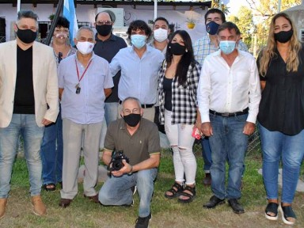

La Cooperativa de Derqui amplió su servicio para llegar a 700 familias de Manzone
Fue a través de la inauguración de una central de conectividad en fibra óptica, que llega a un área que carecía de otros operadores. De esta manera, un servicio esencial en los tiempos que corren podrá estar al alcance de unos 2 mil vecinos.
Esta semana, la Cooperativo Telefónica de Derqui inauguró su nueva central con conectividad en fibra óptica para la localidad de Manzone, ubicada en la calle Soldado Gutiérrez 156 y que tiene como objetivo ampliar sus servicios a esa zona.
Respecto de la concreción de este proyecto, Resumen dialogó con el presidente de la cooperativa, Rodolfo Caffaro, quien remarcó: “Hemos inaugurado la central llevando una tecnología japonesa muy buena, que se está estrenando en Manzone, y en esta primera etapa va a estar preparada para brindarle servicio por fibra óptica o en un sistema mixto, a unas 700 familias de la localidad, lo que representa más de 2.000 personas”.
Asimismo, explicó que “establecimos ese punto allí porque el área no estaba servida por otros operadores, y tomamos la decisión de hacer lo que siempre hizo la cooperativa, que es llegar a los lugares donde nadie llega o nadie quiere llegar. Por esa razón, tendimos casi cinco kilómetros de fibra óptica desde Derqui hasta Manzone”.
Por otra parte, el presidente de la entidad manifestó que “esto va a habilitar una conexión de mayor calidad y capacidad, y además una conexión en la que vamos a poder incluir otros servicios a futuro, como es el caso de la televisión por internet, que a fines del año pasado la cooperativa obtuvo la licencia para poder ofrecerlo”.
En relación al servicio de internet, sostuvo que el escenario de pandemia ha marcado más que nunca “lo esencial que es, y la desigualdad que existe”. Se refirió al gasto que provoca muchas veces el uso de un celular, “por ejemplo en el caso de una familia donde los chicos solo tienen un celular que es del padre, y cuando se va a trabajar lo tiene que dejar en la casa porque los allí reciben las tareas sus hijos”.
Y tras indicar también el peso sobre otros sectores como el comercio o la telemedicina, planteó: “Con esta herramienta lo que estamos haciendo es mejorar la calidad de vida de la gente, que en definitiva es lo que hay que hacer con los servicios”.
Finalmente, señaló que “ya hemos avanzado rápidamente con 17 conexiones, y tenemos unos 57 pedidos. Además, estamos generando desde la central el esquema de tendido, así que a medida que se vaya haciendo van a aparecer todos los requerimientos. Es un trabajo que se realiza con gran esfuerzo, como toda la historia de la cooperativa. Pero tuvimos reuniones con vecinos, como el profesor Víctor Lescano que siempre está haciendo mucho por Manzone para que mejore, y no podíamos defraudarlos. Por eso estamos haciendo este esfuerzo, que en el contexto actual no es fácil, pero es muy importante poder avanzar”.